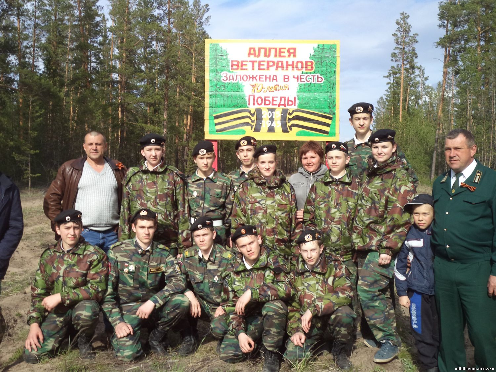
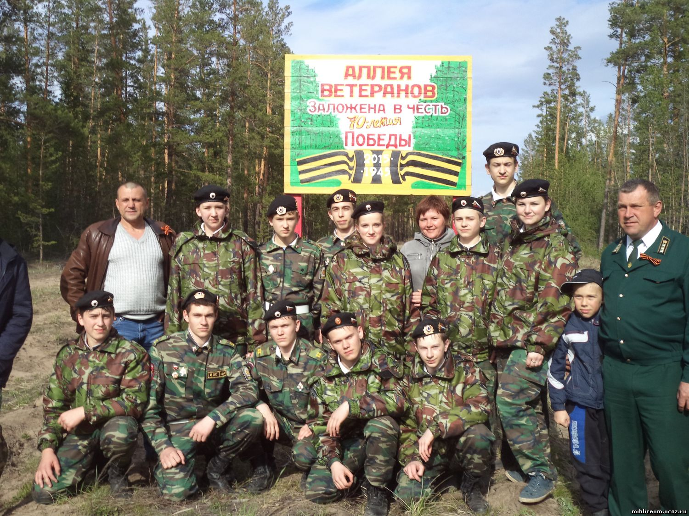
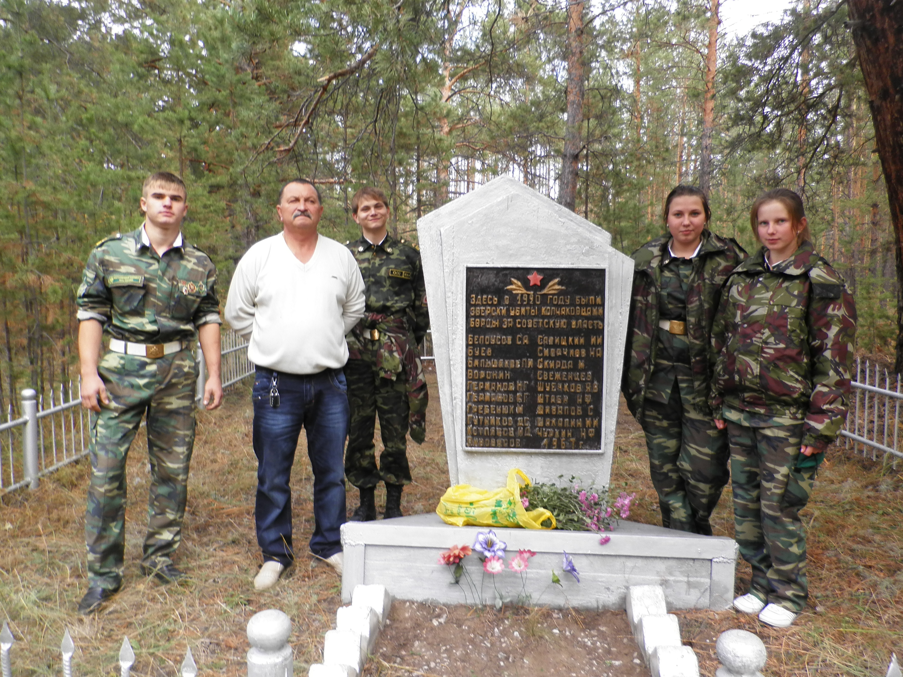
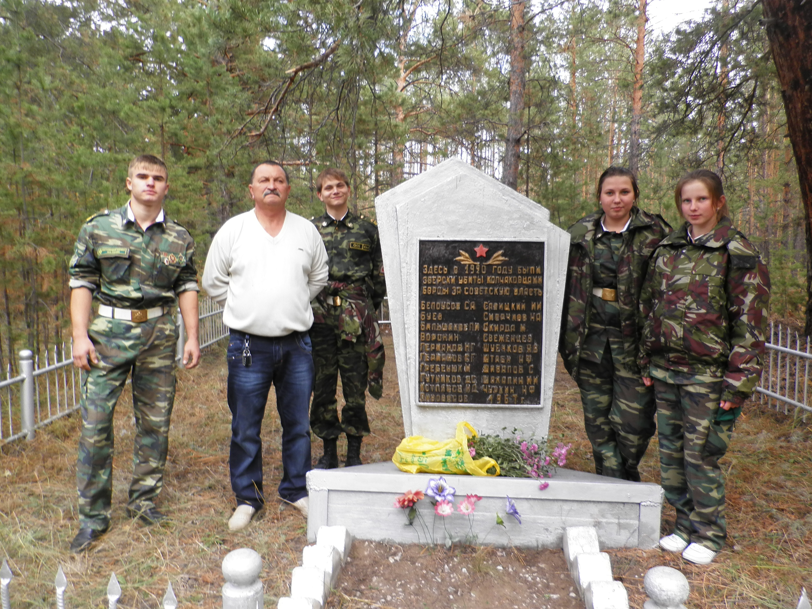
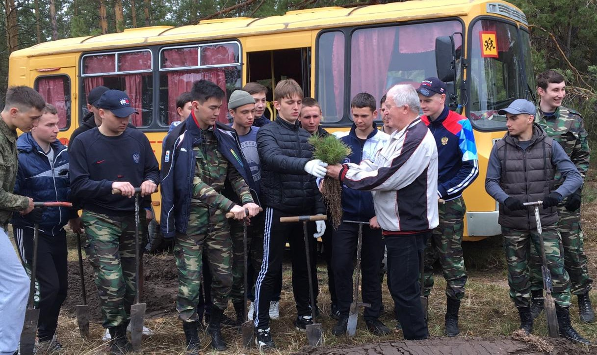
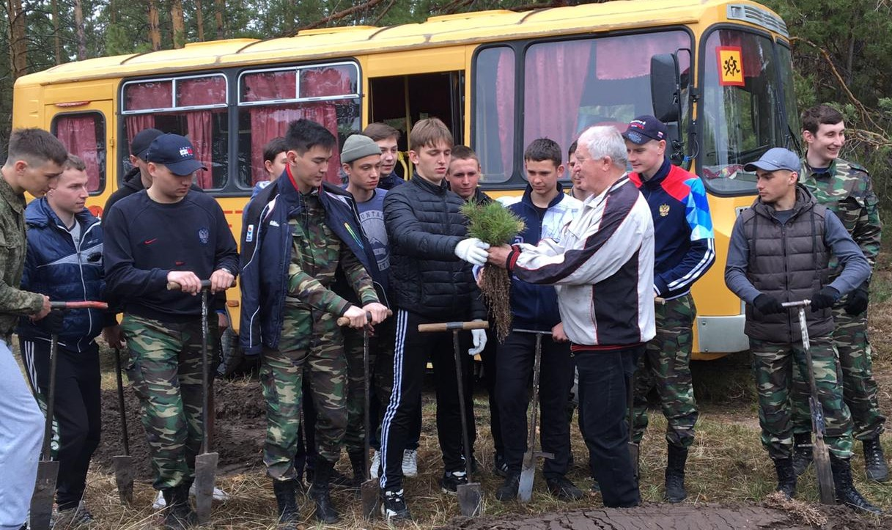
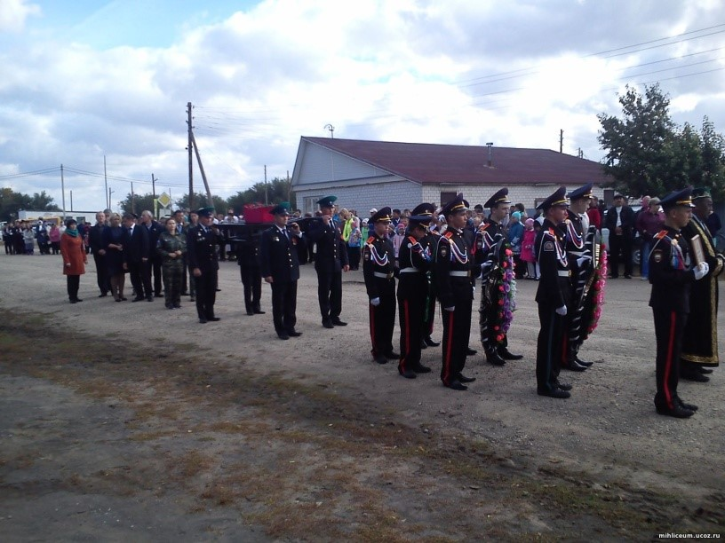
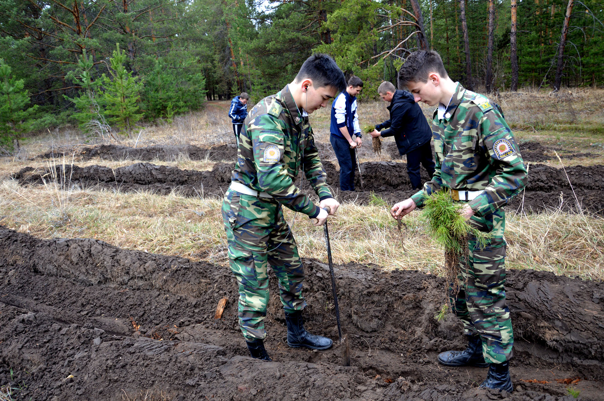
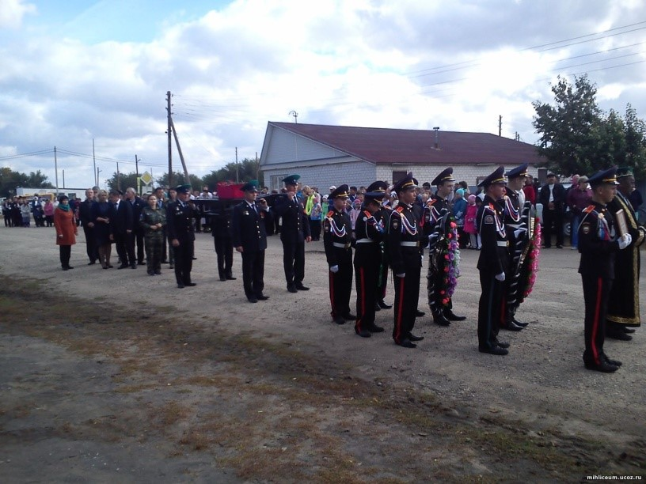
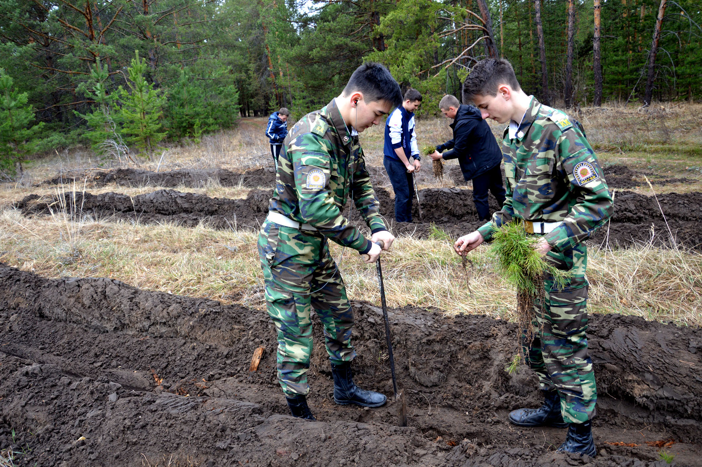

Время идет, но мы обязаны хранить память о Великой Отечественной войне, рассказывать подрастающему поколению о славе предков. Помнить и чтить память о героях, которые отдали свои жизни за свободу нашей родины, это проявление уважения и признание их подвига.
Кадеты Михайловского лицея принимают участие в перезахоронении останков без вести пропавших солдат, ухаживают за Обелиском Славы и памятниками погибшим защитникам Отечества. К 70-летию Великой Победы нашими кадетами была заложена аллея ветеранов.

 


 

 

 


